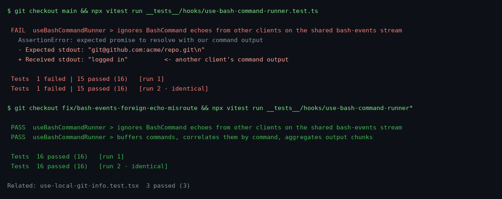

Terminal runs of __tests__/hooks/use-bash-command-runner.test.ts(x): failing twice on main (a foreign BashCommand echo resolves our pending command with another client's output), passing twice with the fix (echoes paired by command text; foreign echoes ignored).
